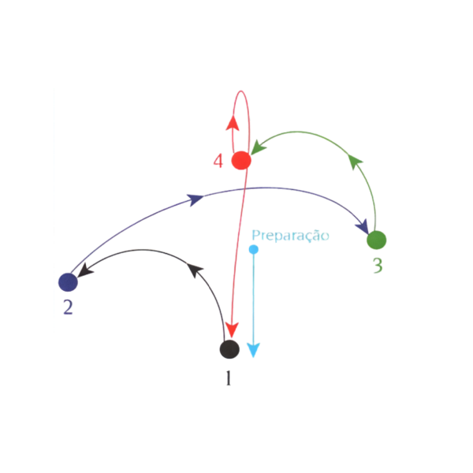

Configurações
Instrumento
Tonalidade
Clave
Aparência
Olá, Estudante!
Bem-vindo ao GEM Tools. Pronto para praticar hoje?
Para acompanhar o seu progresso no hinário e salvar seus estudos, crie ou selecione um perfil de aluno.
Hino 1 · Cristo meu tudo
Este hino é o próximo da sua ficha que ainda não foi marcado como aprovado.
Acesso Rápido
Dica de Estudo
A prática diária de 15 minutos é muito melhor e mais eficiente do que praticar 2 horas apenas no final de semana. Mantenha a constância!
Espelho do instrumento
Jogo do Pentagrama
Corrida de Notas Modo Corrida
Corrida de Notas
As notas vão deslizar pela pauta. Toque na nota correspondente no momento exato em que ela passar pelo retângulo alvo!
Afinador
Para usar o afinador, é preciso permitir o microfone nas configurações do navegador ou do sistema.
Notas alvo do instrumento
Aluno ativo
Visão geral nesta ficha
Visão geral no método (Flauta)
Resumos do Livro do MSA
Selecione uma das 16 fases abaixo.
Fase 1
Resumo em Vídeo
Resumo explicativo (Áudio)
PDF do Método Oficial
Quiz de Fixação
Infográfico da Fase
Leitura e Solfejo (MSA)

Partitura da Lição
Opções de Estudo
Leitura, fonação e metrônomo
Tempo (andamento da partitura)
Novo aluno
Nome e voz principal na matrícula.
Ou conecte um aluno existente da nuvem:
Alterar Congregação
Aluno: ---
O progresso de hinos e lições do método continuará intacto.
Acesso do Professor
Digite seu E-mail e PIN cadastrados para acessar.
Painel do Professor
Comum: Carregando...
| Aluno / Congregação | Progresso | Ações |
|---|---|---|
| Carregando alunos da nuvem... | ||
Cadastrar Novo Professor
Professores Ativos na Nuvem
| Nome / E-mail | Congregação | Ação |
|---|---|---|
| Carregando professores... | ||
Uso por Funcionalidade
Melhores Leitores (Ranking do Jogo)
Top 5 Hinos Tocados
- Carregando...
Top 5 Lições do Método
- Carregando...
Top 10 - Recordes de Tempo
Alunos mais rápidos a concluir 20/20 no Pentagrama.
| Posição | Aluno | Tempo |
|---|---|---|
| Carregando recordes... | ||
Hino 1
O GEM Tools é uma ferramenta de apoio ao estudo musical desenvolvida para os alunos do GEM - Grupo de Ensino Musical da CCB, reunindo recursos de prática, acompanhamento e consulta em um único aplicativo.
Funcionalidades
• Controle local de estudo do Hinário 5 por aluno, voz principal e afinação
• Visão por fases, progresso e acompanhamento individual
• Espelho do instrumento com notas por corda, posição e dedilhado
• Exercícios de identificação de notas e desafios interativos
• Leitura musical com tela de pentagrama
• Afinador com leitura em tempo real, referência de nota e desvio
• Metrônomo com BPM, batidas, acentuação e modo de solfejo
Oferecer uma base prática para o estudo diário, auxiliando na memorização das notas, no desenvolvimento auditivo, na leitura musical e no acompanhamento do repertório.
O aplicativo também faz parte de uma proposta de GEM Inclusivo, buscando ampliar o acesso ao aprendizado musical com foco em praticidade, clareza e acessibilidade.
O GEM Tools continua em evolução, recebendo melhorias visuais, ajustes de usabilidade e novas funcionalidades conforme o uso real do aplicativo.
✔ Sem propagandas.
✔ Sem coleta indevida de dados.
✔ Uso livre para apoio educacional.
Michel Roger Ribeiro Pires.